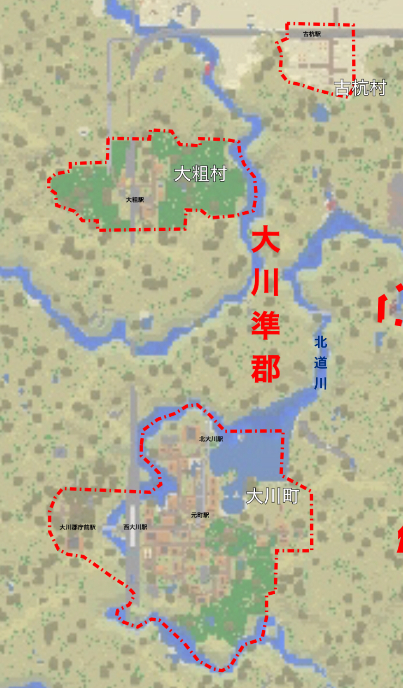

大川準郡(おおかわじゅんぐん)
人口 196人(2023年1月現在)
ようす
準郡ではよくあることだが、構成町村同士が接していないので町村ごとにようすがかなり異なってくる。
| 郡町村名 | 人口 |
|---|---|
| 大川準郡 | 196 |
| 大川町 | 153 |
| 大粗村 | 10 |
| 古杭村 | 33 |

大川町
大川準郡の代表的な町
三方を北道川に囲まれており、大川の地名の“川”はこれが由来だと思われる。
もともと砂砦市の一地区に組み込まれる候補であったがその後取り消された。その影響で砂砦市電が大川の街まで伸びている。
少し前までは砂砦市のベッドタウンになるのではないかと目されていたが、砂砦市自体が港湾地区のベッドタウンと化しつつある結果､大川町もそれにそう形になると思われる。
(砂砦県自身も砂砦市その他に人口を集めつつ港湾地区周辺の土地に産業施設を集中させる方針で動いているように見える。)
大粗村
地名の由来は不明
元は駅の付近に申し訳程度の集落があっただけだったが、現在は小麦畑が広がる。